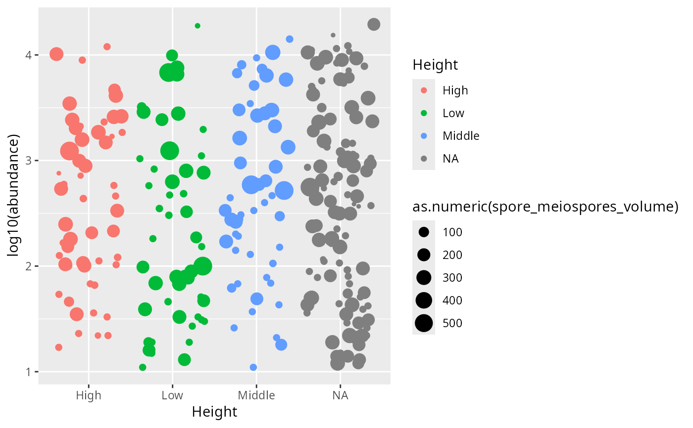

Add fungal spore volume and morphology to a phyloseq object
Source:R/tax_spore_volume_pq.R
tax_spores_volume_pq.Rd<a href="https://adrientaudiere.github.io/MiscMetabar/articles/Rules.html#lifecycle"> <img src="https://img.shields.io/badge/lifecycle-experimental-orange" alt="lifecycle-experimental"></a>
Annotates the taxa of a phyloseq object with fungal spore volume and morphology (length, width, projected area, and length/width ratio) from the spore-trait database compiled by Aguilar-Trigueros et al. (2023) and redistributed by the `q2-fungal-traits` QIIME 2 plugin.
Matching follows the same hierarchical strategy as the upstream plugin: for every requested spore type, a taxon is first matched at the **species** level (exact match on the `genus species` binomial), then, if no species match is found, at the **genus** level, and finally at the **family** level. Genus- and family-level values are the geometric mean (`10^mean(log10(x))`) of every database entry for that rank and spore type, exactly as in the plugin. The matched rank is reported in a `*_matching_level` column. Only taxa whose kingdom/domain is *Fungi* are matched (when a kingdom column is available), preventing cross-kingdom genus-name collisions.
Usage
tax_spores_volume_pq(
physeq,
spore_file = system.file("extdata", "Spore_data_12Nov21.tsv", package = "taxinfo"),
genus_rank = "Genus",
species_rank = "Species",
family_rank = "Family",
kingdom_rank = NULL,
spore_types = c("Mitospores", "Meiospores", "Multinucleate sexual spores",
"Multinucleate asexual spores"),
metrics = c("SporeVolume", "spore_length", "spore_width", "SporeArea", "Q_ratio"),
col_prefix = "spore_",
add_to_phyloseq = TRUE,
verbose = TRUE
)Arguments
- physeq
(required) A phyloseq object.
- spore_file
(Character) Path to the spore-trait TSV file. Defaults to the version bundled with the package (`system.file("extdata", "Spore_data_12Nov21.tsv", package = "taxinfo")`).
- genus_rank, species_rank, family_rank
(Character) Names of the `tax_table` columns holding the genus, species epithet and family. The `species` binomial used for species-level matching is built from `genus_rank` and `species_rank` (the genus is prepended automatically when the species column holds only the epithet).
- kingdom_rank
(Character or `NULL`, default `NULL`) Name of the `tax_table` column holding the kingdom/domain. When `NULL`, the columns `"Kingdom"` and `"Domain"` are looked up automatically. When found, only taxa whose value normalises to `"fungi"` are matched. When no such column exists, the kingdom guard is silently skipped.
- spore_types
(Character vector) Spore types to annotate. Defaults to all four types present in the database: `"Mitospores"`, `"Meiospores"`, `"Multinucleate sexual spores"` and `"Multinucleate asexual spores"`.
- metrics
(Character vector) Spore-trait columns to import for each spore type. Defaults to `"SporeVolume"`, `"spore_length"`, `"spore_width"`, `"SporeArea"` and `"Q_ratio"`.
- col_prefix
(Character, default `"spore_"`) Prefix applied to all columns added to the `tax_table`. New columns are named `<col_prefix><spore_type>_<metric>` (e.g. `spore_mitospores_volume`) plus one `<col_prefix><spore_type>_matching_level` column per spore type.
- add_to_phyloseq
(Logical, default `TRUE`) If `TRUE`, return an updated phyloseq object. If `FALSE`, return a tibble with one row per taxon.
- verbose
(Logical, default `TRUE`) If `TRUE`, print progress messages.
Value
Either an updated phyloseq object (when `add_to_phyloseq = TRUE`) or a tibble of the matched values (when `add_to_phyloseq = FALSE`).
Details
The bundled `Spore_data_12Nov21.tsv` is redistributed verbatim from the `q2-fungal-traits` repository (<https://github.com/bokulich-lab/q2-fungal-traits>), which distributes it under the Modified BSD (3-clause) License. The underlying data were compiled by Aguilar-Trigueros et al. (2023). Taxon names are normalised for matching the same way the plugin does: square brackets are removed, `-` and `_` are turned into spaces, whitespace is squished, and names are lower-cased.
The database covers roughly 25,000 species, 4,200 genera and 600 families, so genus- and family-level fallback matches make the annotation useful even for metabarcoding data resolved only to genus.
References
Aguilar-Trigueros, C. A., Krah, F.-S., Cornwell, W. K., Zanne, A. E., Abrego, N., Anderson, I. C., ... & Bassler, C. (2023). Symbiotic status alters fungal eco-evolutionary offspring trajectories. *Ecology Letters*, 26(9), 1523-1534. doi:10.1111/ele.14271
Examples
res <- tax_spores_volume_pq(data_fungi_mini, verbose = FALSE)
table(res@tax_table[, "spore_meiospores_matching_level"], useNA = "always")
#>
#> family genus species <NA>
#> 7 5 27 6
# Return a tibble instead of a phyloseq object
tib <- tax_spores_volume_pq(
data_fungi_mini,
add_to_phyloseq = FALSE,
verbose = FALSE
)
tidypq::pq_to_tidy(res) |>
filter(abundance > 10) |>
ggplot2::ggplot(ggplot2::aes(x=Height, color=Height, size = as.numeric(spore_meiospores_volume), y = log10(abundance))) +
ggplot2::geom_jitter()
#> After clean_pq: 137 samples, 45 taxa.
#> Filtered 5605 zero-abundance rows.
#> Returning tibble with 560 rows and 48 columns.
#> Warning: NAs introduced by coercion
#> Warning: Removed 57 rows containing missing values or values outside the scale range
#> (`geom_point()`).
